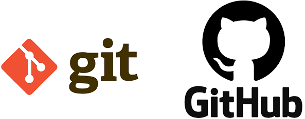

QUE ES GIT:Es un sistema de control de versiones que es distribuible y permite que multiples personas puedan trabajar en equipo, este software basicamente gestiona las versiones por las que va pasando el codigo, se adapta desde pequeños hasta grandes proyectos, se pueden fusionar archivos y guarda una línea de tiempo a lo largo de todo el proyecto.QUE ES GITHUB:Es el software de desarrollo colaborativo para alojar proyectos utilizando el sistema de control de versiones, tambien es llamada como la red social de los desarrolladores donde se alojan los repositorios y el codigo es almacenado de forma publica, aunque tambien se puede hacer privado con una cuenta de pago.CONFIGURACION BASICA DEL CLIENTE GIT:Se distribuye en dos grandes categorias la del lado cliente y las del servidor, y la mayoria de las opciones estan del lado cliente, Una de las primeras acciones que has realizado con Git ha sido el configurar tu nombre y tu dirección de correo electrónico.https://medium.com/@sthefany/primeros-pasos-con-github-7d5e0769158c |
 |